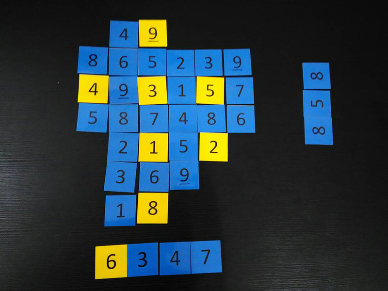

數獨紙牌DIY
數獨，是源自18世紀瑞士的一種數學遊戲。1984年一位日本學者將其介紹到了日本，命名為「sudoku」，其中「su」是數字的意思，「doku」是單一的意思。
數獨是一種運用紙、筆進行演算的邏輯遊戲。玩家需要根據9×9盤面上的已知數字，推理出所有剩餘空格的數字，並滿足每一行、每一列、每一個粗線宮（3*3）內的數字均含1-9。遊戲設計者會提供一部分的數字，使謎題只有一個答案。
你玩過數獨嗎？就算沒玩過也沒關係，此項遊戲會讓你感受數獨全新的樂趣。 這堂課就讓我們來製作數獨紙牌吧！ 遊戲人數：2~5人 遊戲配件：黃色數獨卡、藍色數獨卡
觀察力
一個數獨是由行、列、宮組成的，其本身規則就決定了要完成一個數獨遊戲，就要行、列和宮交錯觀察，混合運用唯一法、排除法（最簡單的）等解法，這無形中就培養了自身的觀察力。
專注力
作為推理遊戲，沒有一定的專注力，是無法將觀察到的已知信息在大腦里迅速分解剖析。
邏輯推理力
數獨的特性讓我們了解做一個數獨，絕不僅僅是用一種解法，而是要多種解法交錯推斷，有的時候需要從繁到簡，從簡到繁的反覆試錯推算過程。
耐力和意志力
這種花腦力的遊戲，困難是必定的，這能很好地鍛鍊孩子的耐力和意志力。
你玩過數獨嗎？就算沒玩過也沒關係，此項遊戲會讓你感受數獨全新的樂趣。 這堂課就讓我們來製作數獨紙牌吧！ 遊戲人數：2~5人 遊戲配件：黃色數獨卡、藍色數獨卡
能力提升 Power-Ups
一個數獨是由行、列、宮組成的，其本身規則就決定了要完成一個數獨遊戲，就要行、列和宮交錯觀察，混合運用唯一法、排除法（最簡單的）等解法，這無形中就培養了自身的觀察力。
專注力
作為推理遊戲，沒有一定的專注力，是無法將觀察到的已知信息在大腦里迅速分解剖析。
邏輯推理力
數獨的特性讓我們了解做一個數獨，絕不僅僅是用一種解法，而是要多種解法交錯推斷，有的時候需要從繁到簡，從簡到繁的反覆試錯推算過程。
耐力和意志力
這種花腦力的遊戲，困難是必定的，這能很好地鍛鍊孩子的耐力和意志力。
